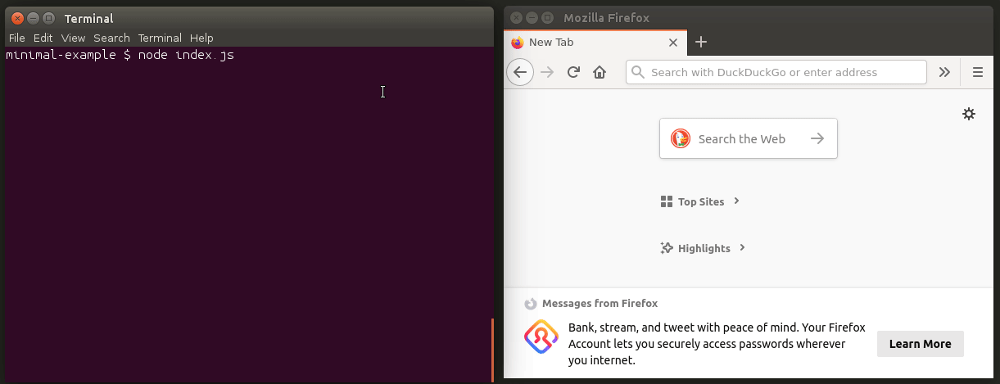
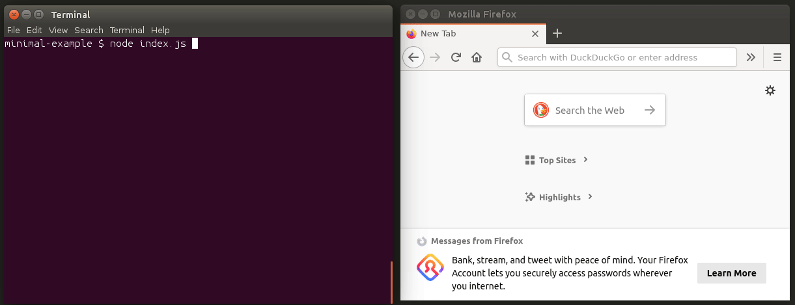
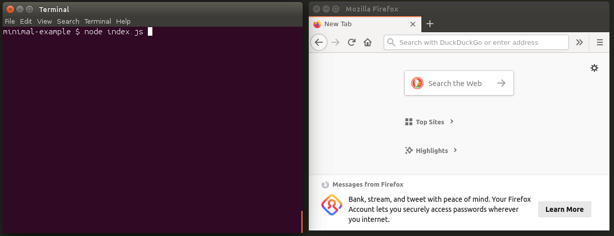

Introduction
What Socket.IO is
Socket.IO is a library that enables real-time, bidirectional and event-based communication between the browser and the server. It consists of:
- a Node.js server: Source | API
- a Javascript client library for the browser (which can be also run from Node.js): Source | API

There are also several client implementation in other languages, which are maintained by the community:
- Java: https://github.com/socketio/socket.io-client-java
- C++: https://github.com/socketio/socket.io-client-cpp
- Swift: https://github.com/socketio/socket.io-client-swift
- Dart: https://github.com/rikulo/socket.io-client-dart
- Python: https://github.com/miguelgrinberg/python-socketio
- .Net: https://github.com/Quobject/SocketIoClientDotNet
How does that work?
The client will try to establish a WebSocket connection if possible, and will fall back on HTTP long polling if not.
WebSocket is a communication protocol which provides a full-duplex and low-latency channel between the server and the browser. More information can be found here.
So, in the best-case scenario, provided that:
- the browser supports WebSocket (97% of all browsers in 2020)
- there is no element (proxy, firewall, …) preventing WebSocket connections between the client and the server
you can consider the Socket.IO client as a “slight” wrapper around the WebSocket API. Instead of writing:
const socket = new WebSocket('ws://localhost:3000'); |
You will have, on the client-side:
const socket = io('ws://localhost:3000'); |
The API on the server-side is similar, you also get an socket object which extends the Node.js EventEmitter class:
const io = require('socket.io')(3000); |
Socket.IO provides additional features over a plain WebSocket object, which are listed below.
But first, let’s detail what the Socket.IO library is not.
What Socket.IO is not
Socket.IO is NOT a WebSocket implementation. Although Socket.IO indeed uses WebSocket as a transport when possible, it adds additional metadata to each packet. That is why a WebSocket client will not be able to successfully connect to a Socket.IO server, and a Socket.IO client will not be able to connect to a plain WebSocket server either.
// WARNING: the client will NOT be able to connect! |
If you are looking for a plain WebSocket server, please take a look at ws or uWebSockets.js.
There are also talks to include a WebSocket server in the Node.js core.
On the client-side, you might be interested by the robust-websocket package.
Minimal working example
If you are new to the Node.js ecosystem, please take a look at the Get Started guide, which is ideal for beginners.
Else, let’s start right away! The server library can be installed from NPM:
$ npm install socket.io |
More information about the installation can be found in the Server installation page.
Then, let’s create an index.js file, with the following content:
const content = require('fs').readFileSync(__dirname + '/index.html', 'utf8'); |
Here, a classic Node.js HTTP server is started to serve the index.html file, and the Socket.IO server is attached to it. Please see the Server initialization page for the various ways to create a server.
Let’s create the index.html file next to it:
|
Finally, let’s start our server:
$ node index.js |
And voilà!
The socket object on both sides extends the EventEmitter class, so:
- sending an event is done with:
socket.emit() - receiving an event is done by registering a listener:
socket.on(<event name>, <listener>)
To send an event from the server to the client
Let’s update the index.js file (server-side):
io.on('connection', socket => { |
And the index.html file (client-side):
const socket = io(); |
Demo:
To send a message from the client to the server
Let’s update the index.js file (server-side):
io.on('connection', socket => { |
And the index.html file (client-side):
const socket = io(); |
Demo:
Now, let’s detail the features provided by Socket.IO.
Features
Its main features are:
Reliability
Connections are established even in the presence of:
- proxies and load balancers.
- personal firewall and antivirus software.
For this purpose, it relies on Engine.IO, which first establishes a long-polling connection, then tries to upgrade to better transports that are “tested” on the side, like WebSocket. Please see the Goals section for more information.
Auto-reconnection support
Unless instructed otherwise a disconnected client will try to reconnect forever, until the server is available again. Please see the available reconnection options here.
Disconnection detection
A heartbeat mechanism is implemented at the Engine.IO level, allowing both the server and the client to know when the other one is not responding anymore.
That functionality is achieved with timers set on both the server and the client, with timeout values (the pingInterval and pingTimeout parameters) shared during the connection handshake. Those timers require any subsequent client calls to be directed to the same server, hence the sticky-session requirement when using multiples nodes.
Binary support
Any serializable data structures can be emitted, including:
- ArrayBuffer and Blob in the browser
- ArrayBuffer and Buffer in Node.js
Multiplexing support
In order to create separation of concerns within your application (for example per module, or based on permissions), Socket.IO allows you to create several Namespaces, which will act as separate communication channels but will share the same underlying connection.